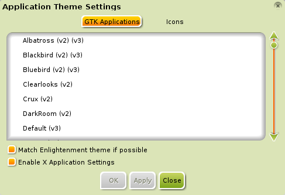
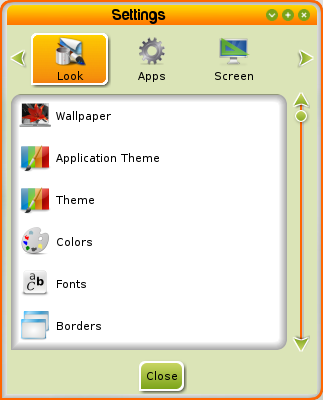
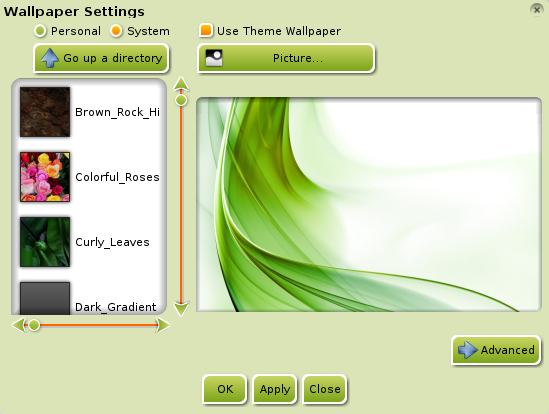
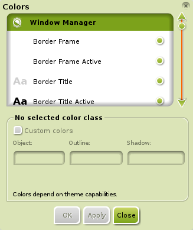
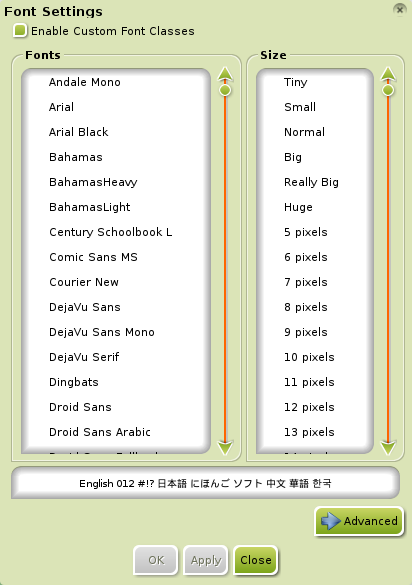
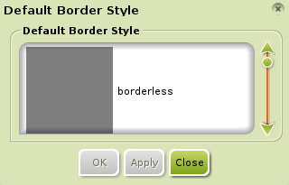
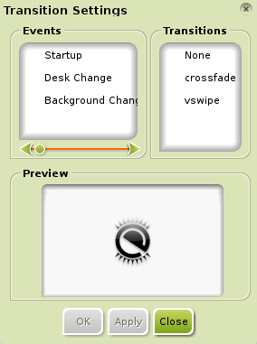
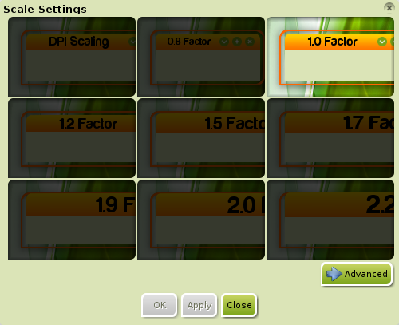

[click on any image to enlarge]
Many applications/items are not directly configured by E17 Themes or are configured much to the user's chagrin. This section is included for users who would like to change specific aspects.
Basic Theming
E17 does offer a way to control the look of GTK/QT applications. To access it, go to Main Menu>Settings>All>Look>Application Theme. In the default tab, GTK Applications, you will see a screen that lists all of the GTK/QT themes you have installed.
{kind=link}
Simply select the GTK/QT theme you wish to use, then click Apply. When you have found a theme you're happy with, click Close
E17 + GTK/QT Integration
Some E17 themes have a defined GTK/QT theme to match it. This allows for the GTK/QT theme to be switched automatically when the E17 theme is switched (see Themes for more info). To enable this feature, open Main Menu>Settings>All>Look>Application Theme and tick the two boxes for Match Enlightenment theme if possible and Enable X Application Settings.
It should be noted that there are many E17 themes that do not have a pre-defined GTK/QT, meaning that changing the E17 theme will have no effect on the GTK/QT theme.
E17 + Icon Theming
Some E17 themes come with built-in icons to match it. Most do not. The solution? Install and apply an icon theme!
The first step would be to install the icon theme you would like to incorporate into your canvas/desktop.
Lucky for you, Bodhi Linux, itself, offers many to choose from.
You can install one, or you can install them all in a single step!
Either do a quick seach in Synaptic (Main Menu>Applications>Preferences>Synaptic Package Manager) or,
preferably, open up Midori (Main Menu>Applications>Internet>Midori) , Bodhi's default web-browser, and go to
Bodhi Art - Icon Themes.
Once you've installed an icon theme, open Main Menu>Settings>All>Look>Application Theme
and go to the Icons tab. From there, scroll through the list of available icon themes and select the one you desire.
E17 incorporates a preview of the icon theme in the dialog, as displayed below, to help in your decision-making.
To enable the icon theme to be used for your applications, tick the box for Enable icon theme for applications.
Now go ahead and click Apply and OK. You are done!
{kind=link}
To override the built-in icons of your E17 theme with your newly applied icon theme, tick Enable icon theme for Enlightenment and this will override the E17 theme's icons.
Other Customizations
E17 has more settings to customize the overall look of Bodhi Linux.
To see them in their entirety, go to
Main Menu>Settings>All and click Look.
The following dialog should come up:

{kind=link}
Each option customizes a specific trait of your desktop. There are many and, because of this, we will cover just a few:
-
Wallpaper
This setting allows you to assign wallpapers to your desktop. Tick Use Theme Wallpaper to use your theme's wallpaper. You can import your own wallpapers by clicking the Picture button. Clicking Advanced allows you to choose whether to apply wallpaper to all desktops or your current desktop/screen only. Everything is pretty self-explanatory. -
Colors
This section allows you to select your own colors for items of windows, widgets, etcetera. The Customized colors button must be ticked for the options to be accessible. -
Fonts
This allows you to change between fonts and adjust the size. You must tick Enable Custom Font Classes to adjust settings. Clicking the Advanced button allows you to specify the item you wish to assign a different font and, if possible, select its font-style (ex. Italic, Bold, Regular, etc.). -
Borders
Allows you to select the border-type you wish to use for all windows, whether it be borderless, dialog, noresize, or other options. Simple and self-explanatory. -
Transitions
This allows you to modify the type of transitions for your system, whether it be the startup, switching between Virtual Desktops, or background changes. The current transition types are none, crossfade, and vertical swipe. It shows you a preview for your viewing pleasure. -
Scaling
This allows you to scale the whole desktop: menus, shelves, theme items/attributes, fonts, and all. Very easy to figure out and simple to use.
{kind=link}
{kind=link}
{kind=link}
{kind=link}
{kind=link}
{kind=link}
Wallpaper
This setting allows you to assign wallpapers to your desktop. Tick Use Theme Wallpaper to use your theme's wallpaper. You can import your own wallpapers by clicking the Picture button. Clicking Advanced allows you to choose whether to apply wallpaper to all desktops or your current desktop/screen only. Everything is pretty self-explanatory.Colors
This section allows you to select your own colors for items of windows, widgets, etcetera. The Customized colors button must be ticked for the options to be accessible.Fonts
This allows you to change between fonts and adjust the size. You must tick Enable Custom Font Classes to adjust settings. Clicking the Advanced button allows you to specify the item you wish to assign a different font and, if possible, select its font-style (ex. Italic, Bold, Regular, etc.).Borders
Allows you to select the border-type you wish to use for all windows, whether it be borderless, dialog, noresize, or other options. Simple and self-explanatory.Transitions
This allows you to modify the type for the transitions of your system, whether it be the startup, switching between Virtual Desktops, or background changes. The current transition types are none, crossfade, and vertical swipe. It shows you a preview for your viewing pleasure.Scaling
This allows you to scale the whole desktop: menus, shelves, theme items/attributes, fonts, and all. Very easy to figure out and simple to use.More descriptions to come in the future! This should sustain you 'til then.